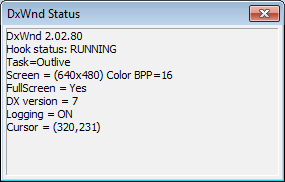

The DxWnd status shows the following information, updated every second:

DxWnd version |
In the picture, the current one: 2.02.80. |
Hook status |
Either IDLE, READY or RUNNING (see tray icons). |
When running, shows the following additional information:
Running |
The task name (see the configuration panel). |
Screen |
(width x height) colordepth, as seen by the task. |
FullScreen |
Yes/No depending whether the task has set the cooperative level to EXCLUSIVE or not. |
DX Version |
Version of the DirectDraw / Direcr3D interface currently in use (namely, the one used to create the primary surface). |
Logging |
The logging flag (either ON or OFF). |
Cursor |
The X,Y cursor coordinates as intercepted and fixed by DxWnd. |
FPS |
Frame per second value calculated by DxWnd. |